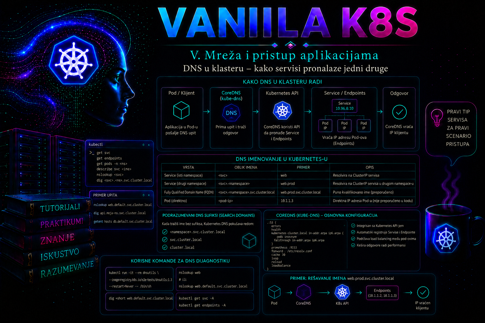

Vanilla Kubernetes

Kubernetes aplikacije se ne mogu pouzdano povezivati korišćenjem IP adresa pojedinačnih Pod-ova. Pod može biti obrisan, ponovo kreiran na drugom worker čvoru i dobiti novu IP adresu, dok se broj njegovih instanci može menjati tokom skaliranja i rollout procesa. Service obezbeđuje stabilnu mrežnu apstrakciju, a klasterski DNS omogućava aplikacijama da taj Service pronađu pomoću predvidljivog imena. Zajedno, Service i DNS čine osnovni mehanizam otkrivanja servisa unutar Kubernetes klastera.
Za administratora DNS nije samo pomoćna funkcija. Neispravan klasterski DNS može istovremeno prekinuti komunikaciju velikog broja aplikacija, iako su njihovi Pod-ovi, Service objekti i mrežne rute formalno dostupni. Zbog toga administrator mora razumeti kako nastaje DNS zapis, kako kubelet formira konfiguraciju resolvera u Pod-u, kako CoreDNS dobija podatke iz Kubernetes API-ja i kako razlikovati problem DNS rezolucije od problema mrežne dostupnosti ili same aplikacije.
Uloga DNS-a u Kubernetes klasteru
Kubernetes klasterski DNS omogućava workload-ovima da koriste logička imena umesto promenljivih IP adresa. Kada aplikacija iz jednog Pod-a treba da pristupi servisu catalog-api, ona ne mora znati IP adresu Service objekta niti adrese njegovih backend Pod-ova. Dovoljno je da pošalje zahtev na DNS ime kao što je catalog-api, catalog-api.shop-prod ili potpuno kvalifikovano ime catalog-api.shop-prod.svc.cluster.local.
DNS ne prosleđuje aplikativni saobraćaj. Njegov zadatak je da ime prevede u odgovarajući zapis, najčešće IPv4 adresu predstavljenu A zapisom ili IPv6 adresu predstavljenu AAAA zapisom. Nakon rezolucije, mrežna komunikacija se odvija preko Kubernetes mrežnog modela, Service mehanizma, kube-proxy implementacije ili odgovarajućeg dataplane-a koji obezbeđuje CNI rešenje. Uspešna DNS rezolucija zato ne garantuje da je aplikacija dostupna, kao što neuspešna TCP konekcija ne dokazuje automatski da DNS ne radi.
Standardni klasterski domen je najčešće cluster.local, ali administrator može izabrati drugi domen prilikom formiranja klastera. Naziv domena ne treba pretpostavljati u skriptama i dijagnostici bez provere. U kubeadm okruženju relevantne vrednosti mogu se proveriti u konfiguraciji kubeleta, CoreDNS Corefile-u i DNS konfiguraciji konkretnog Pod-a.
Kako nastaje DNS zapis za Service
Kada se u namespace-u shop-prod kreira Service nazvan catalog-api, klasterski DNS može objaviti zapis oblika catalog-api.shop-prod.svc.cluster.local. Deo catalog-api predstavlja ime Service objekta, shop-prod namespace, svc zonu za servise, a cluster.local klasterski domen.
Kod običnog Service-a sa dodeljenom clusterIP adresom, A ili AAAA zapis pokazuje na virtuelnu adresu Service-a. DNS ne vraća IP adrese pojedinačnih backend Pod-ova. Izbor backend-a obavlja mrežni Service mehanizam na osnovu EndpointSlice objekata povezanih sa Service-om. Zbog toga se promena Pod-ova iza Service-a obično ne odražava promenom DNS imena ili Service IP adrese.
CoreDNS sa Kubernetes dodatkom posmatra objekte preko Kubernetes API-ja i na osnovu njih dinamički odgovara na upite. DNS zapisi se ne održavaju ručnim uređivanjem tradicionalnih zonskih fajlova. Ako Service bude obrisan, zapis prestaje da postoji; ako se kreira novi Service sa drugim imenom, DNS klijenti moraju koristiti novo ime. Promena selector-a Service-a menja backend skup, ali ne menja njegov DNS naziv.
| Upit | Kontekst | Tipičan rezultat |
|---|---|---|
catalog-api |
Pod je u namespace-u shop-prod |
Resolver dopunjava ime lokalnim DNS search domenom i pronalazi Service |
catalog-api.shop-prod |
Pod je u bilo kom namespace-u | Pronalaženje Service-a uz navođenje namespace-a |
catalog-api.shop-prod.svc.cluster.local |
Potpuno kvalifikovano ime | Direktan upit za klasterski Service zapis |
catalog-api.default |
Service ne postoji u namespace-u default |
NXDOMAIN ili drugi negativan odgovor |
CoreDNS i tok DNS upita
CoreDNS je preporučeni klasterski DNS server i podrazumevana komponenta u savremenim kubeadm instalacijama. Najčešće je pokrenut kao Deployment u namespace-u kube-system, dok Service obično zadržava istorijski naziv kube-dns. Naziv Service-a zato ne znači da klaster koristi staru kube-dns implementaciju; stvarna implementacija proverava se pregledom Pod-ova, Deployment-a i kontejnerske slike.
Kada proces u Pod-u zatraži rezoluciju imena, standardna resolver biblioteka čita /etc/resolv.conf. Kubelet taj fajl generiše za Pod na osnovu njegove dnsPolicy postavke, opcione dnsConfig konfiguracije i klasterske DNS adrese. Upit se šalje DNS Service-u ili, kada je uveden NodeLocal DNSCache, lokalnom DNS agentu na worker čvoru. CoreDNS zatim obrađuje upit kroz lanac dodataka definisanih u ConfigMap objektu coredns.
Tipičan Corefile sadrži dodatak kubernetes za klastersku zonu, forward za prosleđivanje spoljnih upita, cache za keširanje, errors za prijavljivanje grešaka, health i ready za zdravstvene provere i prometheus za metrike. Redosled i dostupnost dodataka zavise od distribucije i administratorske konfiguracije, pa produkcioni Corefile ne treba menjati kopiranjem generičkog primera bez provere postojeće implementacije.
Za ime iz zone cluster.local, Kubernetes dodatak koristi podatke o Service i EndpointSlice objektima. Za spoljne domene, kao što je javni servis proizvođača, upit se uobičajeno prosleđuje upstream resolverima. Ako unutrašnja Kubernetes imena rade, a spoljna ne rade, administrator proverava forward konfiguraciju, resolver na čvoru, firewall, rute i dostupnost korporativnih DNS servera. Ako spoljna imena rade, a Service imena ne rade, fokus se pomera na Kubernetes dodatak, RBAC, API dostupnost, namespace i postojanje Service-a.
Search domeni, kratka imena i opcija ndots
Pod sa podrazumevanom politikom ClusterFirst obično dobija search listu sličnu sledećoj:
search shop-prod.svc.cluster.local svc.cluster.local cluster.local
nameserver 10.96.0.10
options ndots:5
Zbog search liste aplikacija iz namespace-a shop-prod može koristiti kratko ime catalog-api. Resolver redom pokušava odgovarajuće sufikse dok ne dobije odgovor. Pod iz drugog namespace-a ne treba da se oslanja na isto kratko ime, već da navede najmanje catalog-api.shop-prod. Time se izbegava zavisnost od namespace-a iz kojeg je workload pokrenut.
Opcija ndots:5 znači da se ime sa manje od pet tačaka obično prvo pokušava kroz search domene. Ime koje programer smatra spoljnim, na primer api.partner.example, može zato proizvesti nekoliko neuspešnih klasterskih upita pre upita za originalno ime. U aplikacijama koje generišu veliki broj DNS zahteva ovo može povećati latenciju i opterećenje CoreDNS-a. Potpuno kvalifikovano ime završeno tačkom, na primer api.partner.example., resolver može tretirati kao apsolutno ime, ali podrška i ponašanje aplikacije moraju biti provereni.
Administrator ne treba globalno menjati ndots samo radi jednog workload-a. Promena može uticati na način na koji aplikacije pronalaze kratka imena. Pre izmene potrebno je prikupiti DNS metrike, potvrditi obrazac upita, testirati aplikaciju i razmotriti ciljanu dnsConfig postavku na konkretnom Pod template-u.
Linux resolver ima i praktična ograničenja: uobičajeno je dozvoljeno najviše tri nameserver unosa, a kubelet pri formiranju Pod konfiguracije mora uklopiti klasterski DNS sa nasleđenim resolverima čvora. Preduga search lista ili prevelik zbir njene dužine može dovesti do upozorenja DNSConfigForming u događajima Pod-a. Zato se stvarno stanje proverava unutar pogođenog Pod-a i u njegovim događajima, a ne samo u konfiguraciji čvora.
Keširanje, TTL i NodeLocal DNSCache
CoreDNS cache dodatak smanjuje broj ponovljenih upita prema narednim plugin-ovima i upstream resolverima. TTL (vreme važenja zapisa) određuje koliko dugo klijent ili posredni resolver sme da zadrži odgovor. Kubernetes plugin podrazumevano koristi kratak TTL, a administrator ga može menjati direktivom ttl u dozvoljenom opsegu od 0 do 3600 sekundi; vrednost 0 onemogućava keširanje tih odgovora. Duži TTL smanjuje QPS, ali produžava vreme tokom kojeg klijenti mogu koristiti zastareli odgovor. Kratak TTL ubrzava uočavanje promene, ali povećava opterećenje DNS sloja. Odluka se zato zasniva na merenju, ponašanju klijentskih biblioteka i prihvatljivom vremenu konvergencije.
Pozitivno keširanje čuva uspešne odgovore, dok negativno keširanje privremeno pamti odgovore kao što je NXDOMAIN. Negativni keš je koristan protiv ponovljenih upita za nepostojeća imena, ali može kratko zadržati neuspeh i nakon što je Service kreiran. Pri incidentu zato treba zabeležiti TTL iz odgovora komandom dig, proveriti da li postoji lokalni aplikativni keš i ponoviti test nakon isteka TTL-a; restart aplikacije nije prva niti univerzalna korektivna mera.
NodeLocal DNSCache, stabilna Kubernetes mogućnost od verzije 1.18, pokreće lokalni caching agent kao DaemonSet na čvorovima. Pod šalje upit lokalnoj instanci, čime se smanjuju međučvorska latencija, zavisnost od iptables DNAT putanje i pritisak UDP DNS tokova na conntrack tabelu. Agent može prosljeđivati promašaje ka CoreDNS-u preko TCP-a i izlaže metrike po čvoru. To poboljšava otpornost i vidljivost, ali uvodi novu komponentu: kvar lokalnog agenta može pogoditi sve Pod-ove na jednom čvoru, a način vezivanja adresa i kubelet clusterDNS konfiguracije razlikuje se između iptables i IPVS režima. Uvođenje zato zahteva zvanični manifest prilagođen mrežnom režimu, rezervisanu lokalnu adresu bez konflikta, postepenu validaciju i dokumentovan rollback.
| Sloj keša | Korist | Rizik i dokaz koji se proverava |
|---|---|---|
| Aplikacija ili OS biblioteka | Najkraća putanja za ponovljeni upit | Klijent može ignorisati TTL ili dugo zadržati adresu; proveriti dokumentaciju i ponašanje procesa |
CoreDNS cache |
Smanjuje ponovnu obradu i upstream QPS | Stari ili negativni odgovor do isteka TTL-a; proveriti TTL, hit/miss metrike i Corefile |
| NodeLocal DNSCache | Niža latencija, manji conntrack pritisak i metrike po čvoru | Čvorski blast radius; proveriti DaemonSet, lokalnu adresu, logove i razliku između zdravih i pogođenih čvorova |
DNS zapisi za obične, headless i imenovane servise
Običan ClusterIP Service vraća svoju stabilnu virtuelnu adresu. Headless Service ima clusterIP: None i ne obezbeđuje jednu virtuelnu Service IP adresu. DNS odgovor za headless Service može sadržati adrese odgovarajućih backend endpoint-a, što klijentu omogućava direktan izbor instance. Ovakav model se koristi kod StatefulSet aplikacija, baza podataka, distribuiranih sistema i drugih rešenja koja zahtevaju identitet pojedinačnih članova.
Headless Service nije zamena za standardni load balancing. Klijentska aplikacija mora pravilno obraditi više odgovora, promene endpoint-a, redosled adresa, TTL i neuspele članove. Ako aplikacija očekuje jednu stabilnu adresu iza koje platforma bira backend, običan Service je prikladnije rešenje.
Kada Service port ima ime, DNS može objaviti SRV zapis koji sadrži port i cilj. Oblik upita je približno _http._tcp.catalog-api.shop-prod.svc.cluster.local. SRV zapis je koristan aplikacijama koje podržavaju otkrivanje i adrese i porta, ali mnogi HTTP klijenti ga ne koriste automatski. Postojanje SRV zapisa zato ne znači da će ga aplikacija koristiti bez odgovarajuće konfiguracije.
StatefulSet u kombinaciji sa headless Service-om može obezbediti stabilna imena pojedinačnih Pod-ova, na primer postgresql-0.postgresql-headless.shop-prod.svc.cluster.local. Stabilnost imena ne znači da Pod nikada neće biti zamenjen; znači da se isti logički identitet može ponovo povezati sa novom instancom odgovarajućeg ordinala.
Kubernetes DNS specifikacija definiše i zapise za Pod-ove, ali administrator ne treba da gradi aplikativnu arhitekturu na slučajnim ili implementaciono zavisnim imenima. Za Pod koji je endpoint headless Service-a ime i objavljivanje zapisa zavise od hostname, subdomain, spremnosti endpoint-a i opcione postavke publishNotReadyAddresses. Poslednja postavka je namenjena posebnim bootstrap i discovery protokolima: može objaviti nespremnu instancu i time prebacuje odgovornost za proveru zdravlja na klijenta. Za stabilan identitet članova preferira se dokumentovan StatefulSet i headless Service obrazac.
DNS politika i prilagođavanje konfiguracije Pod-a
Polje dnsPolicy određuje osnovu DNS konfiguracije Pod-a. Najčešća vrednost je ClusterFirst, pri kojoj se klasterski upiti šalju klasterskom DNS-u, a ostali upiti se prosleđuju prema upstream resolverima. Vrednost Default nasleđuje DNS ponašanje iz konfiguracije čvora. None omogućava eksplicitnu konfiguraciju kroz dnsConfig, ali zahteva pažljivo navođenje nameserver-a, search domena i opcija.
Za Pod-ove koji koriste hostNetwork: true, politika ClusterFirstWithHostNet se koristi kada je i dalje potrebna klasterska DNS rezolucija. Bez odgovarajuće politike host-network workload može naslediti resolver čvora i izgubiti očekivanu rezoluciju Kubernetes Service imena.
Prilagođavanje dnsConfig opravdano je samo kada workload ima dokazanu potrebu. Ručno navođenje javnog resolvera može zaobići korporativne DNS kontrole, split-horizon zone, bezbednosno evidentiranje i interne domene. Takođe može onemogućiti rezoluciju klasterskih imena ako je politika pogrešno postavljena. Svaka promena mora biti deo deklarativnog manifesta, code review-a i kontrolisane implementacije, a ne ručna izmena /etc/resolv.conf unutar kontejnera.
ExternalName Service i granice DNS apstrakcije
Service tipa ExternalName ne dobija ClusterIP i ne prosleđuje saobraćaj ka Pod-ovima. DNS vraća alias, odnosno CNAME, prema vrednosti iz spec.externalName. Ovaj tip može aplikacijama ponuditi stabilno interno ime za spoljni servis, ali ne proverava dostupnost cilja, ne obezbeđuje TLS terminaciju i ne menja identitet koji aplikacija šalje u HTTP Host zaglavlju ili TLS SNI polju.
Zbog toga ExternalName može biti neprikladan kada sertifikat spoljnog sistema ne obuhvata ime koje klijent koristi, kada protokol zavisi od originalnog hostname-a ili kada je potrebna kontrola saobraćaja, health checking i failover. Administrator mora razlikovati DNS alias od proxy-ja ili gateway-a. DNS može preusmeriti ime, ali ne transformiše aplikativnu sesiju.
Najčešći simptomi i administratorska dijagnostika
Simptom Could not resolve host, Name or service not known ili Temporary failure in name resolution ukazuje na problem u procesu rezolucije, ali ne određuje automatski njegov uzrok. Administrator dijagnostiku vodi slojevito: proverava ime i namespace, konfiguraciju resolvera u Pod-u, dostupnost DNS Service-a, CoreDNS Pod-ove, EndpointSlice objekte, logove, mrežne politike i upstream resolvere.
- NXDOMAIN za jedno ime: najčešće ukazuje na pogrešno ime, pogrešan namespace, nepostojeći Service ili očekivanje zapisa koji Kubernetes ne objavljuje.
- Timeout za sva imena: može ukazivati na nedostupan DNS Service, blokiran UDP/TCP port 53, problem kube-proxy/CNI dataplane-a ili neispravne CoreDNS instance.
- Klasterska imena rade, spoljna ne rade: proveravaju se upstream resolveri, CoreDNS
forwardkonfiguracija, resolver čvora i izlazna mrežna pravila. - Spoljna imena rade, Service imena ne rade: proveravaju se Kubernetes dodatak, API konekcija CoreDNS-a, RBAC, zona klastera i postojanje Service objekta.
- DNS radi iz jednog namespace-a, ali ne iz drugog: proveravaju se korišćeno kratko ime, search domeni i NetworkPolicy pravila za izvorni Pod.
- Rezolucija je povremeno spora: analiziraju se CoreDNS resursi, broj replika, throttling, latencija upstream servera, broj search pokušaja, negativni odgovori i opterećenje conntrack tabele.
Komanda nslookup ili dig proverava DNS, dok curl, wget ili aplikativni klijent proverava i naredne slojeve. Ako dig vrati ispravnu adresu, ali curl dobije timeout, problem se traži u Service portu, EndpointSlice objektima, NetworkPolicy pravilima, aplikaciji ili mrežnom dataplane-u. Ako upit prema DNS imenu ne radi, a direktan upit prema Service IP adresi radi, DNS postaje glavni pravac istrage.
Integrisani praktikum: validacija otkrivanja servisa u produkcionom namespace-u
Poslovni i tehnički kontekst. Razvojni tim implementira interni kataloški API u namespace-u shop-prod. API mora biti dostupan drugim aplikacijama preko stabilnog imena catalog-api.shop-prod.svc.cluster.local. Administrator pre puštanja aplikacije u rad treba da potvrdi da Service ima aktivne endpoint-e, da DNS vraća očekivanu adresu, da kratko ime radi samo u odgovarajućem namespace-u i da se DNS problem može razlikovati od problema aplikativne konekcije.
Referentno okruženje. Koristi se vanilla Kubernetes klaster sa funkcionalnim CNI dodatkom, CoreDNS Deployment-om u namespace-u kube-system i podrazumevanim klasterskim domenom cluster.local. Scenario koristi namespace shop-prod, Deployment catalog-api, ClusterIP Service catalog-api i dijagnostički Pod dns-toolbox.
Prava pristupa. Za implementaciju su potrebna prava za čitanje i kreiranje namespace, Deployment, Pod i Service objekata, kao i čitanje EndpointSlice objekata u namespace-u shop-prod. Za infrastrukturnu dijagnostiku potrebna su read prava nad Service, Pod, Deployment, ConfigMap i log resursima u namespace-u kube-system. Izmena CoreDNS ConfigMap objekta nije potrebna i ne treba je dozvoliti aplikativnom administratoru.
Preduslovi. Komanda kubectl mora koristiti ispravan kontekst, API server mora biti dostupan, a worker čvorovi u stanju Ready. Administrator mora evidentirati broj promene, ciljnu verziju manifesta i vlasnika aplikacije.
-
Proveriti kontekst i osnovno stanje klastera.
Pre kreiranja objekata administrator potvrđuje da radi nad odgovarajućim klasterom. Greška u kontekstu može dovesti do implementacije produkcionog workload-a u pogrešnom okruženju.
Validacija: API server i DNS Service treba da budu prikazani u rezultatukubectl config current-context kubectl cluster-info kubectl get nodes kubectl get namespace shop-prodcluster-info, svi planirani worker čvorovi treba da buduReady, a poslednja komanda može vratitiNotFoundako namespace još nije kreiran.NotFoundje u ovom trenutku prihvatljivo početno stanje, dok timeout ili greška autorizacije zahtevaju prekid postupka. -
Proveriti klasterski DNS pre aplikativne promene.
Ova provera sprečava pogrešno pripisivanje postojećeg infrastrukturnog problema novoj aplikaciji.
Validacija: CoreDNS Deployment treba da ima jednak broj željenih i dostupnih replika. Pod-ovi treba da budukubectl -n kube-system get deployment coredns kubectl -n kube-system get pods -l k8s-app=kube-dns -o wide kubectl -n kube-system get service kube-dns kubectl -n kube-system get endpointslice -l kubernetes.io/service-name=kube-dnsRunningiReady, Service treba da ima ClusterIP adresu i portove 53/UDP i 53/TCP, a EndpointSlice najmanje jednu spremnu adresu. Ako selektor Pod-ova ne vrati rezultat, proverava se stvarna labela pomoćukubectl -n kube-system get pods --show-labels. -
Kreirati deklarativni manifest referentne aplikacije.
Manifest se čuva u fajlu
27-dns-shop-prod.yaml. Nginx služi kao jednostavan HTTP backend, jer omogućava da se DNS i Service funkcionalnost validiraju bez zavisnosti od poslovne aplikacije.
Validacija: Server-side dry run mora proći bez greške pre stvarne primene. Nakon primene svi objekti treba da budu kreirani ili neizmenjeni ako već odgovaraju manifestu.cat > 27-dns-shop-prod.yaml <<'EOF' apiVersion: v1 kind: Namespace metadata: name: shop-prod --- apiVersion: apps/v1 kind: Deployment metadata: name: catalog-api namespace: shop-prod labels: app.kubernetes.io/name: catalog-api spec: replicas: 2 selector: matchLabels: app.kubernetes.io/name: catalog-api template: metadata: labels: app.kubernetes.io/name: catalog-api spec: containers: - name: catalog-api image: nginx:1.27-alpine ports: - name: http containerPort: 80 readinessProbe: httpGet: path: / port: http initialDelaySeconds: 2 periodSeconds: 5 resources: requests: cpu: 25m memory: 32Mi limits: cpu: 200m memory: 128Mi --- apiVersion: v1 kind: Service metadata: name: catalog-api namespace: shop-prod spec: type: ClusterIP selector: app.kubernetes.io/name: catalog-api ports: - name: http protocol: TCP port: 8080 targetPort: http EOF kubectl apply --dry-run=server -f 27-dns-shop-prod.yaml kubectl apply -f 27-dns-shop-prod.yaml
Deployment treba da ima dve dostupne replike, oba Pod-a treba da budukubectl -n shop-prod rollout status deployment/catalog-api --timeout=120s kubectl -n shop-prod get deployment,pods,service -o wideReady, a Service treba da dobije ClusterIP adresu. -
Potvrditi vezu između Service-a i backend Pod-ova.
DNS zapis može postojati i kada Service nema nijedan backend. Zato se EndpointSlice proverava pre funkcionalnog testa.
Validacija: Service selector mora odgovarati labelama Pod-ova. EndpointSlice treba da sadrži IP adrese oba spremna Pod-a i port 80, dok Service izlaže port 8080. Ova razlika je očekivana: klijent koristi port 8080, a Service prosleđuje zahtev na imenovani kontejnerski portkubectl -n shop-prod get service catalog-api -o yaml kubectl -n shop-prod get endpointslice \ -l kubernetes.io/service-name=catalog-api -o wide kubectl -n shop-prod get pods \ -l app.kubernetes.io/name=catalog-api \ -o custom-columns='NAME:.metadata.name,IP:.status.podIP,READY:.status.containerStatuses[*].ready'http. -
Kreirati dijagnostički Pod u istom namespace-u.
Dijagnostički Pod koristi sliku koja sadrži DNS i mrežne alate. U produkciji treba koristiti interno odobrenu i skeniranu sliku iz organizacionog registra; javna slika ovde predstavlja bezbednu zamensku vrednost za laboratorijski scenario.
Validacija: Pod mora preći u stanjecat > 27-dns-toolbox.yaml <<'EOF' apiVersion: v1 kind: Pod metadata: name: dns-toolbox namespace: shop-prod labels: app.kubernetes.io/name: dns-toolbox spec: restartPolicy: Always containers: - name: dns-toolbox image: registry.k8s.io/e2e-test-images/dnsutils:1.3 command: - sleep - "3600" resources: requests: cpu: 10m memory: 16Mi limits: cpu: 100m memory: 64Mi EOF kubectl apply --dry-run=server -f 27-dns-toolbox.yaml kubectl apply -f 27-dns-toolbox.yaml kubectl -n shop-prod wait \ --for=condition=Ready pod/dns-toolbox \ --timeout=120sReady. Ako slika ne može da se preuzme zbog zatvorenog enterprise registra, manifest treba prilagoditi odobrenoj internoj slici, a ne privremeno otvarati nekontrolisan internet pristup. -
Pregledati DNS konfiguraciju koju je kubelet dodelio Pod-u.
Ovim se potvrđuju nameserver, search domeni i resolver opcije koje aplikacija stvarno koristi.
Validacija: Politika treba da budekubectl -n shop-prod exec dns-toolbox -- cat /etc/resolv.conf kubectl -n shop-prod get pod dns-toolbox \ -o jsonpath='{.spec.dnsPolicy}{"\n"}'ClusterFirst, eksplicitno ili kao podrazumevana vrednost. Search lista treba da počinje domenom namespace-ashop-prod.svc.cluster.local, a nameserver treba da odgovara klasterskoj DNS adresi ili adresi NodeLocal DNSCache-a ako je ta komponenta uvedena. -
Validirati kratko, namespace i potpuno kvalifikovano ime.
Tri oblika upita potvrđuju search mehanizam i postojanje punog Service zapisa.
Validacija: Sva tri upita treba da vrate istu ClusterIP adresu Service-a. Adresa se poredi sa sledećim rezultatom:kubectl -n shop-prod exec dns-toolbox -- \ nslookup catalog-api kubectl -n shop-prod exec dns-toolbox -- \ nslookup catalog-api.shop-prod kubectl -n shop-prod exec dns-toolbox -- \ nslookup catalog-api.shop-prod.svc.cluster.local
Ako kratko ime ne radi, a FQDN radi, problem je u search domenima ili prilagođenoj DNS konfiguraciji Pod-a. Ako nijedan oblik ne radi, proveravaju se CoreDNS, Service i mrežni pristup portu 53.kubectl -n shop-prod get service catalog-api \ -o jsonpath='{.spec.clusterIP}{"\n"}' -
Izvršiti funkcionalnu proveru preko DNS imena.
DNS test potvrđuje samo rezoluciju. HTTP zahtev potvrđuje i Service port, endpoint-e, mrežni dataplane i backend aplikaciju.
Validacija: Komanda treba da vrati podrazumevanu Nginx HTML stranicu i exit status 0. Status se može eksplicitno proveriti:kubectl -n shop-prod exec dns-toolbox -- \ wget -qO- http://catalog-api:8080/
Očekivani rezultat jekubectl -n shop-prod exec dns-toolbox -- \ sh -c 'wget -qO- http://catalog-api:8080/ >/dev/null; echo exit_status=$?'exit_status=0. Ako DNS upit radi, ali HTTP zahtev ne radi, DNS se ne smatra uzrokom dok se ne provere Service port, EndpointSlice, NetworkPolicy i aplikativni logovi. -
Izvršiti negativni test pogrešnog namespace-a.
Test potvrđuje da klaster ne vraća zapis za nepostojeću kombinaciju imena i namespace-a.
Očekivani rezultat: Upit treba da vrati NXDOMAIN ili ekvivalentnu poruku da ime nije pronađeno. To je ispravno ponašanje, jer Servicekubectl -n shop-prod exec dns-toolbox -- \ nslookup catalog-api.defaultcatalog-apipostoji u namespace-ushop-prod, a ne udefault. Ako bi rezultat vratio adresu, administrator bi proverio da li u namespace-udefaultpostoji istoimeni Service. -
Razlikovati DNS kvar od mrežnog ili aplikativnog kvara.
Prvo se čuva rezultat rezolucije, zatim se Service testira po imenu i direktnoj ClusterIP adresi.
Tumačenje: Ako oba HTTP testa rade, DNS i Service putanja su funkcionalni. Ako direktna ClusterIP adresa radi, a ime ne radi, istraga ostaje na DNS sloju. Ako DNS vraća ispravnu adresu, ali oba HTTP testa ne rade, proveravaju se Service, EndpointSlice, NetworkPolicy, kube-proxy ili CNI dataplane i backend aplikacija.SERVICE_IP="$(kubectl -n shop-prod get service catalog-api \ -o jsonpath='{.spec.clusterIP}')" kubectl -n shop-prod exec dns-toolbox -- \ nslookup catalog-api.shop-prod.svc.cluster.local kubectl -n shop-prod exec dns-toolbox -- \ wget -qO- http://catalog-api:8080/ >/dev/null kubectl -n shop-prod exec dns-toolbox -- \ wget -qO- "http://${SERVICE_IP}:8080/" >/dev/null -
Pregledati CoreDNS logove bez menjanja Corefile-a.
Standardni logovi otkrivaju restartovanja, probleme sa Kubernetes API-jem, upstream timeout-e i greške dodataka. Query logging možda nije uključen, što nije greška.
Validacija: Ne treba da postoje ponavljani API timeout-i, poruke o nemogućnosti učitavanja Kubernetes zone, kontinuirani upstream timeout-i ili česta restartovanja. Privremeno uključivanjekubectl -n kube-system logs deployment/coredns \ --since=15m --prefix=true kubectl -n kube-system get events \ --sort-by=.lastTimestamp | tail -n 30 kubectl -n kube-system describe deployment corednslogdodatka u Corefile-u može proizvesti veliko opterećenje i količinu zapisa, pa se radi samo uz odobrenu promenu, definisan vremenski period i plan vraćanja. -
Dokumentovati merljive kriterijume prihvatanja.
Promena se prihvata kada su ispunjeni sledeći kriterijumi: obe replike Deployment-a su dostupne; Service ima jednu ClusterIP adresu; EndpointSlice sadrži dve spremne backend adrese; kratko ime, namespace ime i FQDN vraćaju istu Service adresu; HTTP zahtev preko DNS imena završava statusom 0; pogrešno namespace ime vraća negativan DNS odgovor; CoreDNS nema nova restartovanja niti ponavljane greške tokom testa.
Rezultati, vreme testiranja, korišćeni kontekst, verzija manifesta i identifikator promene čuvaju se u sistemu za upravljanje promenama ili repozitorijumu operativne dokumentacije.kubectl -n shop-prod get deployment catalog-api kubectl -n shop-prod get service catalog-api kubectl -n shop-prod get endpointslice \ -l kubernetes.io/service-name=catalog-api kubectl -n kube-system get pods \ -l k8s-app=kube-dns \ -o custom-columns='NAME:.metadata.name,RESTARTS:.status.containerStatuses[*].restartCount' -
Cleanup laboratorijskog scenarija.
U produkciji se aplikacija ne uklanja nakon uspešne validacije. Sledeća komanda koristi se samo kada je scenario izveden u privremenom laboratorijskom klasteru ili kada je odobreno potpuno uklanjanje referentnog namespace-a.
Upozorenje: Brisanje namespace-a uklanja sve resurse u njemu. Pre izvršenja proveriti kontekst i sadržaj namespace-a.
Bezbednija alternativa: Ako treba ukloniti samo dijagnostički Pod, a zadržati aplikaciju, koristi se:kubectl config current-context kubectl -n shop-prod get all kubectl delete namespace shop-prod
Manifest aplikacijekubectl -n shop-prod delete pod dns-toolbox rm -f 27-dns-toolbox.yaml27-dns-shop-prod.yamlzadržava se u version control sistemu ako predstavlja odobreno željeno stanje.
Administratorske prakse
- Praćenje dostupnosti CoreDNS replika. Najmanje svakodnevno i nakon nadogradnje klastera proveravaju se željene, dostupne i nedostupne replike komandom
kubectl -n kube-system get deployment corednsi kroz monitoring. Reakcija je potrebna kada dostupne replike padnu ispod planiranog minimuma ili se stanje ne oporavi u definisanom intervalu. Prva reakcija je pregled Pod statusa, događaja, resursa i logova. Incident, uzrok, trajanje i pogođeni workload-ovi dokumentuju se u incident sistemu. Uspešnost se meri dostupnošću DNS servisa i vremenom oporavka. - Praćenje DNS latencije i grešaka. CoreDNS Prometheus metrike prate broj zahteva, trajanje odgovora, tipove odgovora i greške dodataka. Analiza se radi kontinuirano, sa alarmima zasnovanim na uobičajenom stanju klastera. Nagli rast SERVFAIL odgovora, timeout-a ili p95/p99 latencije zahteva proveru CoreDNS kapaciteta, upstream resolvera i mreže. Grafikoni, pragovi i izmene čuvaju se u monitoring repozitorijumu i operativnom runbook-u.
- Kontrola restartovanja i resursnog pritiska. Posle promene broja workload-ova, node pool-a ili DNS konfiguracije proveravaju se restart count, CPU throttling, memorija i OOM događaji. Koriste se
kubectl top pod -n kube-system, monitoring ikubectl describe pod. OOMKilled, kontinuiran throttling ili rast reda DNS zahteva zahtevaju analizu limita, zahteva i broja replika, a ne automatsko povećavanje resursa bez kapacitetskog plana. - Provera EndpointSlice objekata. Posle promene selector-a, labela, readiness probe-a ili rollout-a proverava se da li Service ima očekivane spremne endpoint-e. Komanda
kubectl get endpointslice -n NAMESPACE -l kubernetes.io/service-name=SERVICEkoristi se pri svakoj implementaciji i incidentu dostupnosti. Prazan skup endpoint-a zahteva proveru selector-a, labela i spremnosti Pod-ova pre eskalacije mrežnom timu. - Kontrola NetworkPolicy pravila za DNS. Posle uvođenja default-deny politike proverava se da li workload može da šalje UDP i, zbog velikih odgovora ili fallback-a, TCP saobraćaj na port 53 prema dozvoljenom DNS odredištu. Test se obavlja iz stvarnog workload namespace-a. Timeout uz funkcionalan CoreDNS iz drugog namespace-a često zahteva pregled egress pravila. Dozvola se dokumentuje u manifestu politike i bezbednosnom opisu toka saobraćaja.
- Kontrolisana izmena Corefile-a. Pre izmene čuvaju se postojeći ConfigMap manifest, broj replika, logovi i bazne metrike. Izmena prolazi code review, testiranje i plan povratka. Posle promene proveravaju se rollout, sintaksne greške, readiness, klasterski i spoljni upiti. Uspeh znači da nema porasta grešaka i da su prethodno definisani testovi ponovljivi. Ručno uređivanje bez evidentirane kopije nije prihvatljiva produkciona praksa.
- Backup i oporavak DNS konfiguracije. CoreDNS ConfigMap, Deployment specifikacija, RBAC objekti i konfiguracija eventualnog NodeLocal DNSCache-a čuvaju se deklarativno u zaštićenom Git repozitorijumu i kroz redovan backup Kubernetes kontrolnog stanja. Integritet se proverava review procesom, potpisom ili checksum kontrolom repozitorijuma i probnim vraćanjem u izolovanom klasteru. Backup je upotrebljiv tek kada obnovljeni DNS uspešno razrešava testni Service i spoljni kontrolni domen.
- Kapacitetsko planiranje. Broj CoreDNS replika i resursi proveravaju se posle značajnog povećanja broja čvorova, Pod-ova, Service objekata ili DNS intenzivnih aplikacija. Reakciju ne određuje samo broj objekata, već merena latencija, QPS, throttling i raspoloživost. Kod velikih klastera razmatraju se autoscaling i NodeLocal DNSCache, ali tek nakon merenja i testiranja kompatibilnosti.
Kontrolna lista
- ☐ Potvrđen je tačan
kubectlkontekst i svi potrebni worker čvorovi imaju stanjeReady. - ☐ CoreDNS Deployment ima očekivan broj dostupnih replika, a njegovi Pod-ovi nemaju neobjašnjiva restartovanja.
- ☐ Service
kube-dnsima ispravnu ClusterIP adresu i portove 53/UDP i 53/TCP. - ☐ DNS Service ima najmanje jedan spreman EndpointSlice endpoint.
- ☐ Aplikativni Service selector odgovara labelama ciljnih Pod-ova.
- ☐ EndpointSlice aplikativnog Service-a sadrži očekivan broj spremnih backend adresa.
- ☐ U testnom Pod-u su provereni
/etc/resolv.conf, nameserver, search domeni idnsPolicy. - ☐ Kratko ime, ime sa namespace-om i FQDN vraćaju očekivanu Service adresu.
- ☐ Negativni test sa nepostojećim namespace-om vraća NXDOMAIN ili ekvivalentan negativan odgovor.
- ☐ Aplikativni zahtev preko DNS imena završava očekivanim odgovorom i exit statusom 0.
- ☐ Provereno je da NetworkPolicy pravila ne blokiraju potreban UDP i TCP DNS saobraćaj.
- ☐ CoreDNS logovi i događaji ne pokazuju ponavljane API, plugin ili upstream greške.
- ☐ Rezultati validacije, vreme testa, manifest i identifikator promene evidentirani su u odgovarajućem sistemu.
Zaključak
Administrator nakon ove lekcije treba da razume da Kubernetes DNS nije nezavisni imenik ručno održavanih hostova, već dinamički servis za otkrivanje objekata zasnovan na stanju Kubernetes API-ja. Treba da razlikuje DNS ime Service-a od IP adresa backend Pod-ova, običan Service od headless Service-a, klasterski zapis od ExternalName aliasa i uspešnu rezoluciju od uspešne aplikativne konekcije.
Praktična odgovornost administratora obuhvata proveru CoreDNS dostupnosti, resolver konfiguracije u Pod-u, Service i EndpointSlice objekata, namespace konteksta, mrežnih pravila i upstream DNS zavisnosti. Promena Corefile-a, DNS politike ili resolver opcija mora biti zasnovana na merenju, testirana iz stvarnog workload okruženja i praćena planom povratka. Posebno je važno ne pripisivati svaki timeout DNS-u i ne zatvarati incident nakon uspešnog nslookup testa ako aplikativna komunikacija i dalje ne radi.
Granica administratorskog ovlašćenja nastaje kada rešavanje zahteva promenu korporativnih DNS zona, firewall pravila, CNI dataplane-a, cloud mreže, aplikativnog resolvera ili sertifikata spoljnog sistema. Tada administrator prikuplja ponovljive testove, vremena, izvore i odredišta, DNS odgovore, relevantne logove i metrike, a zatim eskalira odgovornom timu bez nekontrolisanog menjanja zajedničke infrastrukture. Pouzdano klastersko otkrivanje servisa postiže se tek kada su implementacija, monitoring, bezbednosna pravila i dokumentovanje promene deo istog operativnog procesa.